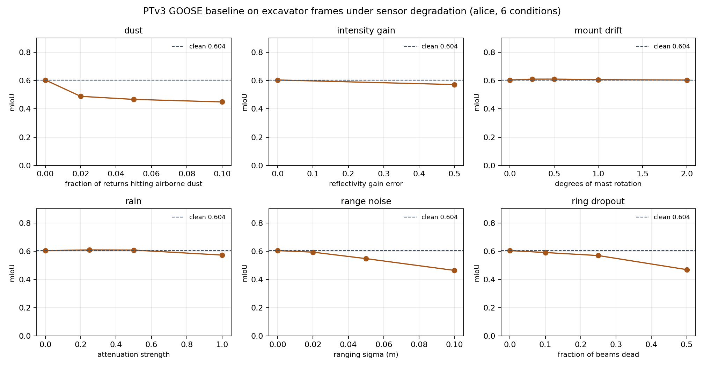
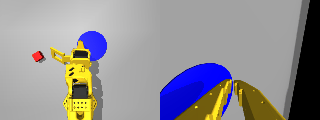
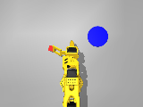
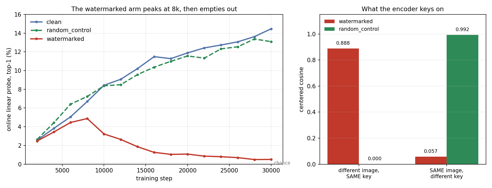

World models · Real-time video ML · GPU infrastructure
I fine-tune action-conditioned world models and audit perception models on hardware I can hold. Before that I ran real-time computer vision on live sports broadcast for seven years, at 10,000+ requests per second across a 100+ GPU cluster, where an outage is visible to viewers as it happens.
Every number on this page is measured, reproducible from a public repo, and includes the cases where the result went against me.
A published off-road 3D segmentation baseline reports 0.8096 mIoU on the GOOSE 3D challenge. I sliced one prediction pass by the platform the frames came from. The headline number turns out to be the wheeled vehicle talking — it contributes 72% of the validation points, and the excavator sits 19 mIoU points below it, on a checkpoint whose own config trained on excavator frames. This is not a zero-shot transfer gap.
Platform
mIoU
obstacle IoU
artificial_ground IoU
offroad vehicle
0.7968
0.660
0.737
quadruped
0.7113
—
—
Liebherr R924 excavator
0.6040
0.060
0.013
The confusion matrix says what actually happens: from the excavator's mast, 89% of obstacle points are predicted as natural ground, and 98% of made ground. The model keeps the dominant class — soil, 60% of returns, IoU 0.88 — and loses the two classes a machine that digs has the most reason to care about. Three million labelled obstacle points is not a small-sample artifact.

Seventeen seeded degradation conditions, excavator frames only, same checkpoint and protocol.
Dust is the expensive one, and it is cheap to cause. Corrupting 2% of returns costs 0.116 mIoU — about what killing half the sensor's beams costs (0.134). Mount drift does nothing. Rotating the cloud up to 2°, the way a mast shifts on a machine that vibrates all day, leaves the score flat. That was the failure mode I built the sweep to catch, and it is not a failure mode — worth knowing before anyone funds mount rigidity for this model.
The follow-up question was whether something small enough to run on the machine does better on the classes the baseline collapses on. I chose the representation by measurement rather than by convention: a spherical range image keeps only 4.2% of points on these accumulated clouds, so a 0.20 m BEV grid it is — 100% of points kept, and a per-cell majority label round-trips 94.1% of per-point labels, checked per class.
Excavator frames
BEV U-Net (1.93 M)
PTv3 (published)
mIoU
0.6399
0.6040
obstacle
0.214
0.060
artificial_ground
0.396
0.013
allAcc
0.8741
0.9010
human
0.603
0.784
3.5× better on obstacles, 30× on made ground, and it gives up overall accuracy and loses on human and vegetation to get there. The honest framing: a small specialised model beats a large general one on the platform it was specialised for — not that a U-Net beats a point transformer.
Every op is native to TensorRT 8.2 at ONNX opset 11, so it exports with no plugins. On a Jetson Nano, FP16 runs at 127.7 ms mean / 129.5 ms p99 from an 11.8 MB engine. Against a 10 Hz lidar the budget is 100 ms, so a six-year-old board misses real time by 1.3× with no optimisation work done yet. INT8 could not be demonstrated and the log says why — Maxwell predates DP4A, so TensorRT accepts --int8, falls back, and emits an engine identical to the FP16 one. Reporting a 1.63× "INT8 speedup" would have been the FP16 number wearing a different label.
Fine-tuned iVideoGPT — an autoregressive transformer world model — on the Bridge V2 manipulation dataset, and beat the OXE-pretrained baseline on every rollout metric. Data preparation, training and evaluation pipeline all built from scratch.
The evaluation was lying before the model was. Every rollout metric came out as mush until I isolated it: the VQ decoder is silently wrong on Apple Silicon. Token ids were bit-identical between CPU and MPS and transformer logits matched to 1e-6, but decoded pixels scored ~14 PSNR against 24–31 on CPU. Root cause is a mid-block attention returning a channels-last view that the MPS SiLU kernel mishandles — three .contiguous() calls. Reported upstream as issue #29, fix submitted as PR #30. The July training run had been healthy all along; only its metrics were corrupted.
2026 · LeRobot + ACT in MuJoCo, trained on Apple Silicon
88%unseen layouts, 50 trials
90/100pooled, two seed sets
92,940expert frames at 50 Hz
52 MACT params
The full imitation-learning pipeline for an SO-101 arm: scripted IK expert, a 600-episode two-camera dataset at 320×240, and ACT (action-chunking transformer) trained on an M-series Mac. 88% pick-and-place success on unseen object layouts, independently confirmed at 92% on a second seed set. Dataset keys and units match the real so101_follower, so the same code drives the physical STS3215 arm unchanged.

Trained policy — wrist and overhead views, the two cameras it sees.

The scripted IK expert that generated the data.
Warm-starting was the single biggest lever. Resuming from the previous best checkpoint hit 72% in 10k steps, where the from-scratch run needed 60k to reach 68%.
Checkpoints had to be selected on rollout success, not training loss. Loss fell steadily from 0.060 to 0.057 across a ten-point drop in success. Both runs peaked and then declined. Trusting the loss curve would have shipped the worse policy.
The failures are informative. Every grasp now converts to a success; what remains are runs that never close on the cube, spread evenly across the spawn range — vision precision, not timing or policy structure.
Two dataset variants failed before this worked. A 35 mm cube run collapsed to 2/20 because the scripted expert did not yaw-align the jaw, so the demonstrations disagreed with each other. Inconsistent experts cost more than small ones.
2026 · LeJEPA on ImageNet-1k, rented A100s, $18 of GPU
14.5% → 0.51%linear probe collapse
13.1%matched-energy control
2.5×better training objective
$18measured, not estimated
An independent reproduction of the LeJEPA case from Enigma Labs' The Obsessed Encoder: three arms, 30k steps, cost measured before committing. Planting a faint predictable watermark drove the online linear probe from 14.5% to 0.51% — chance is 0.1% — while the training objective got 2.5× better.

The objective and the probe moving in opposite directions.
The arm that makes the claim is the control. A matched-energy pattern, differing from the watermark only in whether it repeats, landed back on the baseline at 13.1% — which isolates predictability, not added pixels, as the cause. Paired-input cosine similarity inverts between the arms, 0.888 against 0.057: the encoder represents the key and discards the picture. Two bugs in the published quickstart were found and fixed on the way in.
A robot policy that fought back
2024 · built with my kid
An autonomous JetBot on a Jetson Nano: ~3,000 hand-labelled frames, a behaviour-cloning ResNet18 driving policy running in series with a YOLOv5 safety-stop detector on every frame, inside a 4 GB / 10-watt envelope.
The first model trained on an artificially uniform dataset and failed on the road. Three rounds of rebalancing the training distribution to match deployment conditions is what made it drive. Shortcut features and distribution mismatch stopped being abstractions after that, and it is the reason I now build the evaluation before the model.
Profiling Enigma Labs' open-source multiplayer world model on Apple Silicon traced its documented CPU-fallback requirement to one unimplemented MPS kernel: bicubic upsampling was round-tripping to the CPU on every rendered frame. Self-attention was also materialising a 1.1 GB matrix per layer, twice per frame. The PR raises the version floor so the interpolation is untouched and computes attention in head groups — 2315 MB down to 1074 MB, output bit-identical, with a reproducible inference benchmark.
thuml/iVideoGPT #30 — silent numerical bug in the VQ decoder on Apple Silicon
Root cause and fix for the decoder corruption described above: a channels-last view from mid-block attention that the MPS SiLU kernel mishandles on torch ≤ 2.5. Three .contiguous() calls, plus a check script, verified on torch 2.2.1 and 2.14.0. Closes issue #29.
In production, at scale
Nielsen Sports — AI Lead / ML Engineering Manager, 2018–2025
10K+ RPSGPU inference, live
100+ GPUs30-node cluster
100 M+images per dataset
+30% / −20%throughput / latency
Real-time video ML for a live public audience. Production computer vision on live sports broadcast — motion blur, occlusion, lighting shifts, camera cuts, unscripted chaos — where an outage is visible to viewers as it happens.
A C++/CUDA inference server, before NVIDIA shipped Triton. Multiple models sharing one GPU memory arena and one CUDA context: 30% more throughput, 20% lower latency, against strict memory budgets. Also TensorRT FP16/INT8 quantisation and dynamic batching once Triton existed.
The training platform the team used. Ray-based distributed training and the data pipelines under it, over datasets past 100 million images. Established "A/B against the incumbent before production", so models shipped on measured evidence.
Dataset and distribution ownership end to end — sampling strategy, labelling workflows, class balance — because in production video the training distribution decided more than the architecture did.
Streaming ingestion. Event-driven pipelines on Kafka and KEDA over continuous multi-camera streams, GPU workers autoscaling on queue depth.
Led five engineers while staying in production code: hiring, mentoring, design review, on-call.
Currently Applied AI Lead at A.Team, building production AI for Fortune-500 clients — CLIP-based evaluation pipelines with regression gates, multi-agent LLM systems, retrieval over Pinecone and LanceDB. Earlier: distributed ETL, Spark and Elasticsearch relevance work at StuccoMedia.
Background
M.Sc. Electrical Engineering (image processing) — Tel Aviv University B.Sc. Electrical Engineering (VLSI) — Shenkar College of Engineering
Based in Brooklyn, New York. Most at home where the model, the data pipeline and the physical system are all one job.